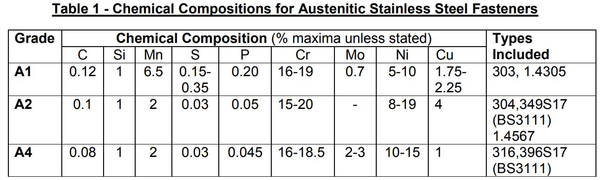

Ref :
http://coolsoo.egloos.com/2178085

Grade A2 does not specify molybdenum additions but allows these (Normally thedeliberate addition of molybdenum makes the grade A4).The carbon level of grade A4 is allowed to be up to 0.12% max. to obtain specifiedmechanical properties at larger diameters.
The DIN/ISO A2 and DIN/ISO A4 stainless bolts are two common types of stainless steel fasteners that come in different sizes. A2 bolts are also known as ASTM 304 or 18-8, while the A4 is also known as a "marine" bolt or ASTM 316.
The A2 stainless steel grade bolt has a decent corrosion resistance under normal conditions such as wet surroundings, oxidising and organic acids or alkali and salt solutions. The A4, however, is also called an "acid proof" steel grade, as it is more corrosion resistant than the A2. The A4 proves to be resistant in highly corrosive environments such as sea climates and industrial atmospheres with lots of oxidising acids.
A4 bolts are more corrosion resistant because of a higher chromium content. According to volksbolts.com, the downside of a higher content of this element is that it also makes the bolt more brittle and likely to crack. Because of this, the A2-bolt, which is already very resistant against corrosion, is more popular for automotive use than the A4.
Visually, there is no discernable difference between A2 and A4 stainless steel as they are polished using the exact same process – but there are characteristics that provide a difference between the two steels.
A4 stainless steel is made of 16% chromium, 10% nickel and 2% molybdenum.
It is typically known as marine grade stainless steel due to its resistance to salt water corrosion, and can be found in a number of constructions in contact with water.
A4 is exceptionally resistant to salt spray, making it a common choice in marine and naval applications.
It also makes the fasteners easier to fabricate, clean, finish and weld.
Whilst A4 is more expensive than A2, it can be more cost-effective over a longer period of time – especially when being used outside.